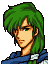

Opening 1

困ったことになりましたな
ターラからの退却はよいとしても
市民が一緒では・・・

市民が？

ごめんなさい、リーフ様
危険だからと説得したのですが
どうしても私たちと一緒に行きたいと・・・
そうなのか・・・
で、人数はどのくらい？
およそ６００名ほどです
ばらばらとわれらの後に続いてきます
でも、レンスターまで
連れてゆくことはできないだろう
ええ
われらには市民を守る
余力はありません
現にこの谷をぬけることすら
難しいと思われます
だが
せめて彼らがこの谷を抜けるまでは
守るしかない
みんなにも伝えてくれ
市民を守ることに全力を尽くせと
はい、承知しました
Opening 2
ミーシャ将軍
ペガサス部隊の手配は
できておるのだろうな

ええ
傭兵団の半数は連れてきました
まもなく配備はおわります
では
そなたはレンスターに戻れ
もう用はない
私は部隊の指揮をとらねばなりません
今回の任務は敗残兵の掃討だ
そなたが望むところではあるまい
ですが、部下たちは・・・
ミーシャ将軍、これは命令だ
レンスターへ帰れ！
わかりました
では・・・
When a civilian escapes (A)
.png)
ありがとうよ
このＳドリンクをおいていくから
使ってやってくれ
When a civilian escapes (B)
.png)
助かりました・・・
お礼にこのＳドリンクを
おいていきます
When a civilian escapes (C)
.png)
ありがとう！
お礼にこのＳドリンク
あげるね！
When a civilian escapes (D)
ご迷惑をかけてごめんなさい
このＳドリンク
お礼にさしあげます
When a civilian escapes (E)
すまねえな
このＳドリンクをおいていくから
使ってやってくれよ！
When a civilian escapes (F)
すまなかった・・・
このＳドリンクをおいていくから
使ってくれ・・・
After Leif escapes
なんとか谷をぬけましたな
これから先は？
ドーファの山地をぬけて
北公路に出る予定です
北公路？ 海ぞいを東進するのか？
そう考えていますが
アウグストの意見も
聞かねばなりません
とにかく今は
この山をこえることが先決です
先を急ぎましょう、リーフ様

まて、アウグスト

レヴィン様！？
どうしてこのようなところに？
ターラの陥落を知り
たぶんこのルートだろうと思った
だいぶ苦労をしているようだな
わたくしめの力が足りぬゆえ・・・
申し訳ありません
いや、おまえはよくやっている
ターラの陥落は予定通りだ
おまえが気にすることはない
はっ・・・
私はオーガヒルを回った後
イザークへもどる
一年後には再会できるだろう
ではアウグスト
後はたのんだぞ・・・
あと一年・・・
わしの役目もおわらぬのか・・・
Codha: battle quote
ふっふっふっ
おろかな者どもよ・・・
Codha: defeat quote
ロプト神よ・・・
わが魂を救いたまえ・・・
Codha: release quote
・・・われらは死を恐れぬ・・・
ぐふっ
Eichmann: battle quote
(No dialogue)
Eichmann: defeat quote
(No dialogue)
Eichmann: release quote
(No dialogue)